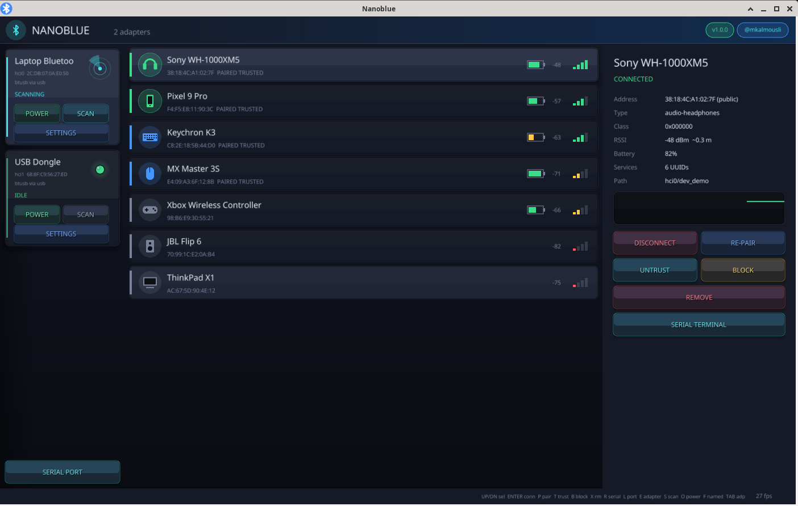
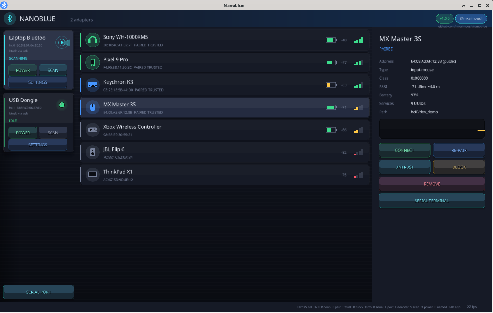
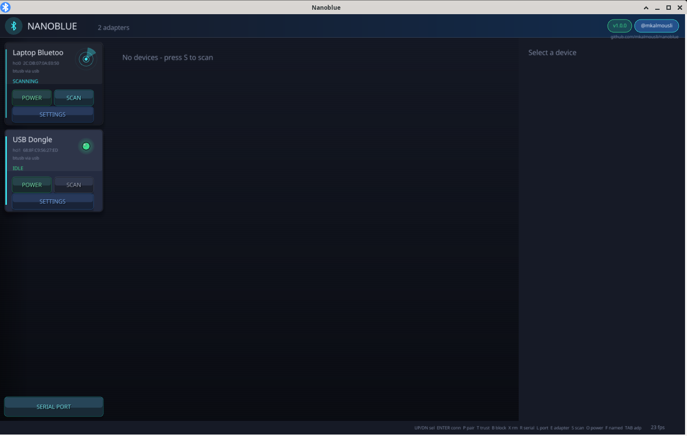

Nanoblue
A fast, good-looking Bluetooth manager and serial terminal for Linux.
Install
curl -fsSL https://raw.githubusercontent.com/mkalmousli/nanoblue/main/scripts/install.sh | sh
Uninstall
curl -fsSL https://raw.githubusercontent.com/mkalmousli/nanoblue/main/scripts/uninstall.sh | sh

RealtimeLive device list driven by BlueZ signals. Connect, pair, trust, block, remove.
Multi adapterhci0, hci1 and more, each with scan, power and full settings.
Serial terminalRFCOMM over Bluetooth or local USB serial ports, hex and text views.
Tray and updatesTray icon with menu, automatic updates from GitHub releases.
TinyPure C, raylib, no build system beyond one build.c; every file at most 100 lines.
Everywhere on LinuxBuilds for x86_64, aarch64, armv7, i386 and riscv64.

